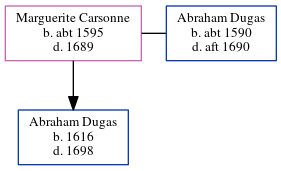

Marguerite Dugas (née Carsonne) c1595 - 1689
[ Home ] | [ Calendar ] | [ Surnames Index ] | [ Census Index ] | [ Family History ]Marguerite Carsonne, the 11 times great-grandmother of Michele Copp (née Phillips), was born in Toulouse, France c. 15951 and married Abraham Dugas (with whom she had 1 child, Abraham) in Loudun, Vienne, Poitou-Charentes, France in 1610.
She died in 1689 in France.
Children
- Abraham was born in 1616
Citations
- U.S. and International Marriage Records, 1560-1900 Online publication - Provo, UT, USA: The Generations Network, Inc., 2004.Original data - This unique collection of records was extracted from a variety of sources including family group sheets and electronic databases. Originally, the information was deriv
Family Tree
Generated by ged2site. Last updated on Jun 6, 2024